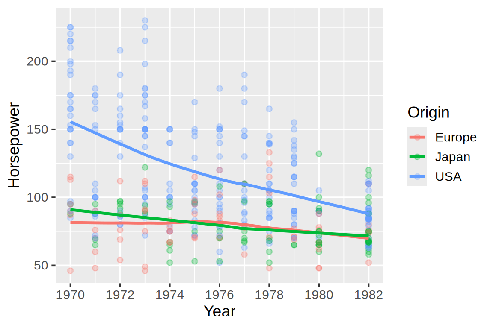
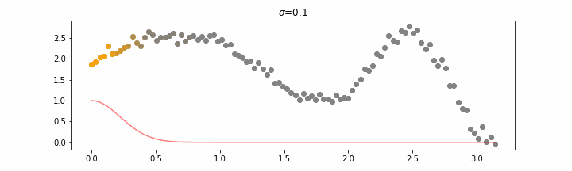
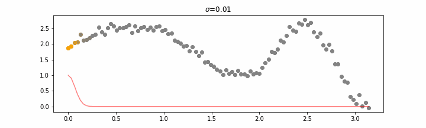
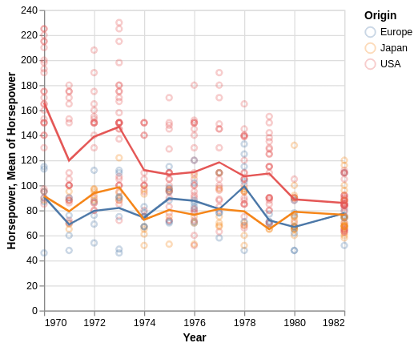
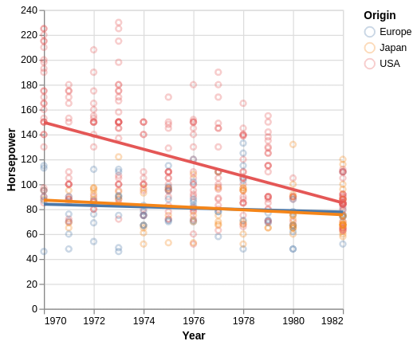
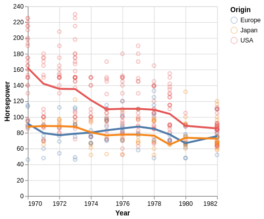

car_points +geom_smooth(method ='loess', span =0.8, se =FALSE, linewidth =1.2,method.args =list(degree =1, family ='symmetric'))

Local variation and smoothness

A narrower weighting neighborhood follows more local variation. Source: scikit-lego.

A wider weighting neighborhood produces a smoother curve. Source: scikit-lego.
Compare the questions answered by different summaries
Mean-based summary

Linear regression

Local smoothing

When to choose which trendline?
Means and rolling averages are useful when the summarized values should have a straightforward interpretation. They can be particularly accessible to a general audience.
Regression models are useful when a simple equation is a reasonable description of the relationship. Predictions beyond the observed range rely on that model continuing to hold, and become more uncertain as they move further from the data.
LOESS is useful for describing patterns within the observed data without choosing one global equation. It often resembles the trend a reader would sketch by eye, but depends on the smoothing setting and is poorly suited to extrapolation.